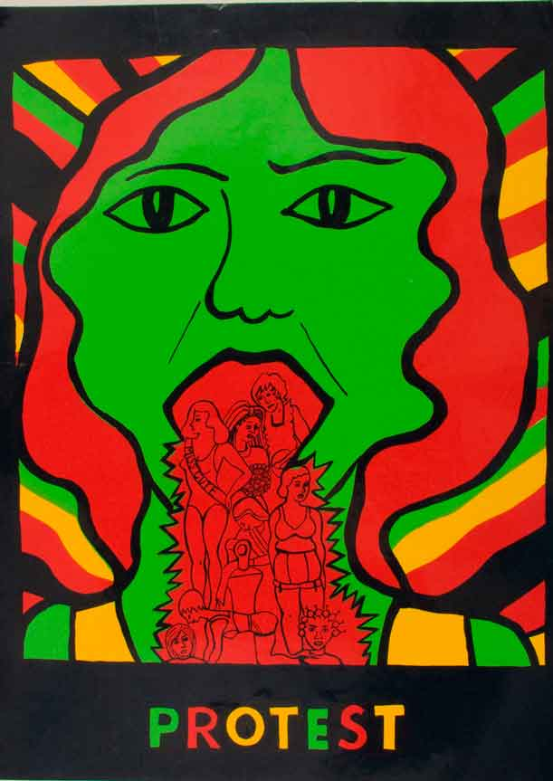
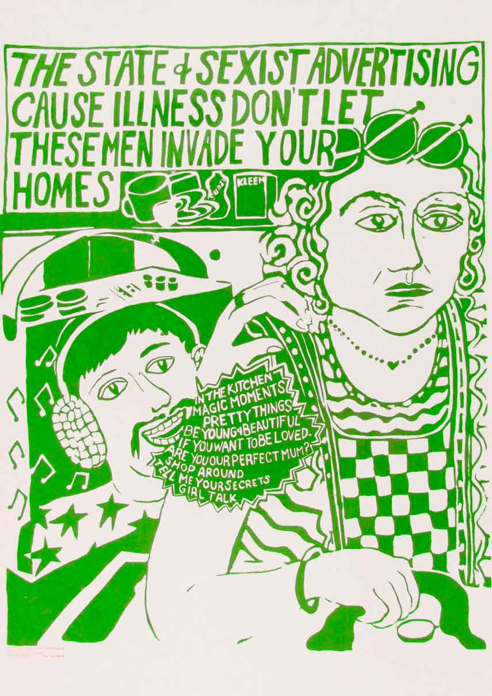

Seeing Red
Interview by Sofia Niazi
See Red Women’s Workshop was a screen-printing workshop run as a women’s collective between 1974 and the early 1990s. The workshop was based in South London and produced some of the most striking posters and pamphlets to emerge from the ongoing feminist movement. OOMK interviewed founding members Pru Stevenson and Susan Mackie.
What is See Red Women's workshop and how did it come about?
See Red Women’s Workshop (1974-1990) was founded by three ex art students in 1973. We met through an ad placed in Red Rag - a radical feminist magazine - asking for women interested in forming a group to explore and combat the negative images of women in advertising and the media. See Red grew out of that meeting and a collective was formed producing silk screened posters for the women’s liberation movement as well as for community groups and others on request.
Working collectively was central to the ethos of See Red, as was sharing skills and knowledge. Members belonged to women’s consciousness raising groups and were active in various radical and alternative organisations. In the early days the posters were mainly produced about our own personal experiences as women, about the oppression of housework, childcare, and the negative images of women. We always thought of it as propaganda for the women’s movement.
It was 1973 -1974, and as young women interested in politics and social issues we became very interested in the women’s liberation movement as it came into being. We were there at the right time in the right place, and we were part of it as well. We didn’t go in to create the ideas, we went in to promote the ideas of the women’s movement, to try and make it clear that the personal is political. You couldn’t just go in and do feminist posters then come home and do something completely different – we lived and breathed it. We came to it because we’d done graphics and fine art and felt that we wanted to do something that we knew we could do well, but do it with and for the women’s movement. It was a lot to do with the images of women and the way that women were portrayed in the media - they were very sexist times. That was the norm then, girls did this and boys did that, and things were just starting to be thought about. Men were going out and doing all sorts of left wing political activities, which we could do to a certain extent, but women were very marginalised and felt displaced within that
Looking at the posters it's amazing how relevant some of the messages still are today, do you feel like anything has changed?
Yes and no! In some ways, there is more awareness around inequalities between men and women, and childcare and housework is now more acceptable to some men. But all the polls show that working women still do the bulk of the housework and childcare! Sexuality may be more openly discussed nowadays, but young gays and lesbians are still beaten up on the streets. And the current govts cuts have hit women and children the hardest: there is now an even greater divide between rich and poor. Look at the detail in the picture frame in the Maggie Thatcher poster “My message to women of Britain: Tough!” - just add several million pounds to each figure, and it could easily be redone nowadays, with Maggie of hiding behind Cameron’s mask! Issues around lack of self esteem, and stereotypes of beauty and body shape, are sadly now more invidious: it was rare then for teenage girls to want breast implants, and young people are now being sexualized much younger. Rape in marriage is now no longer legal, but violence against and exploitation of women, although less hidden, is still a major global issue.
At the time, who were the posters aimed at...
All women! We started off addressing issues that affected all women (housework, childcare, reproductive rights etc) and, as different women joined the collective, different issues and themes were addressed (black women, sexuality, self-defence, mental health etc) We also produced posters on commission for various local women campaigns and national organizations
Where were they displayed?
We produced catalogues – there was no world wide web, email or facebook! - and the bulk of the posters were sold by mail order, and displayed in bookshops, colleges, workplaces, homes, cafes, women’s conferences etc. We sent out posters in cardboard tubes that we picked up from wholesale fabric manufacturers at the back of East St market, and sent them across the world, to China, Australia etc.
I love that the collective was run solely by women, do you think it's important to have female only groups and spaces?
Yes, absolutely! The collective on average consisted of c.6 women at any one time, but in all at least 35 women passed through the workshop. We felt we needed to meet and talk as women about issues that were important to us: many of us were in women-only consciousness -raising groups at the time. We wanted to work in a women-only, non-hierarchical environment.
Until we got small grants in 1983, it’s worth saying that we took no income from the collective: many of us worked part time or had childcare commitments.
As a women's collective/workshop how did you function, did you all work independently or together on posters? (The posters are beautifully designed, did you and the other members of the workshop all have backgrounds in art and design or was it something you developed informally?)
Three ex art students were the original founding members of See Red. We shared all the tasks involved in running a silk screen collective: working collectively was central to our ethos, as was sharing skills and knowledge. An idea for a poster would be discussed, a member would work on a design, bring it back for comment, someone else might make changes and so on until the collective were satisfied with the end result; no one individual took the credit. This was a concept many in the art world found hard to accept; “who holds the pencil? someone must hold the pencil”. Quality was important and many hours would be spent on ensuring that only posters that were well printed and produced left the workshop. Many of our posters use humour as a way of making them more accessible. It was important that they shouldn’t put women off and that women could identify with them. “YBA wife?” is funny, yet it is asking what kind of life do you have as a stereotypical wife.
What was it about screen printing that attracted you to the aesthetic and process?
It was immediate and portable, a screen could easily be set up in a kitchen, or at a conference. We could draw straight on the screen and print almost immediately. We wanted them to be good to look at, as well as having a strong message, and the screen printing gave us a strong and dynamic result.
Other groups or projects that you were working alongside that inspired you?
Many print collectives were initially influenced by the simplicity and immediacy of the style of ‘May 68’ (Paris / the Atelier Populaire). We also travelled to the States where we visited print workshops and absorbed amongst others the influences of Cuba and Latin America radical posters. We were part of an era of radical poster-making: eg Lenthal Road Women’s Printshop, The Poster Collective etc.
It was vitally important for us that women with different experiences from different backgrounds came in shared struggles they were interested in and their life experiences. We could then work together and enable them to produce posters that they wanted. This was crucial because our initial white middle-class experience was limited.
What advice would you give to someone wanting to start a women's activist art project?
You need to have a passion and believe in what you are doing: you can’t be half hearted! A grounding in design and print, and various other skills such as book keeping, are essential, but skills can be learnt and shared. It is important that the finished product is of a high quality. Be adventurous and make use of current new media and whatever other creative methods are available to you.
Where can we see the posters?
We have recently set up a website seeredwomensworkshop.wordpress.com where you can see most of our posters: it’s still a work in progress! After many years, The V&A, Tate Britain, the Women’s library, and the Fawcett Library all have collections of our posters.
Pru Stevenson and Suzy Mackie
Founder members, See Red Women’s Workshop 1973 - 2002